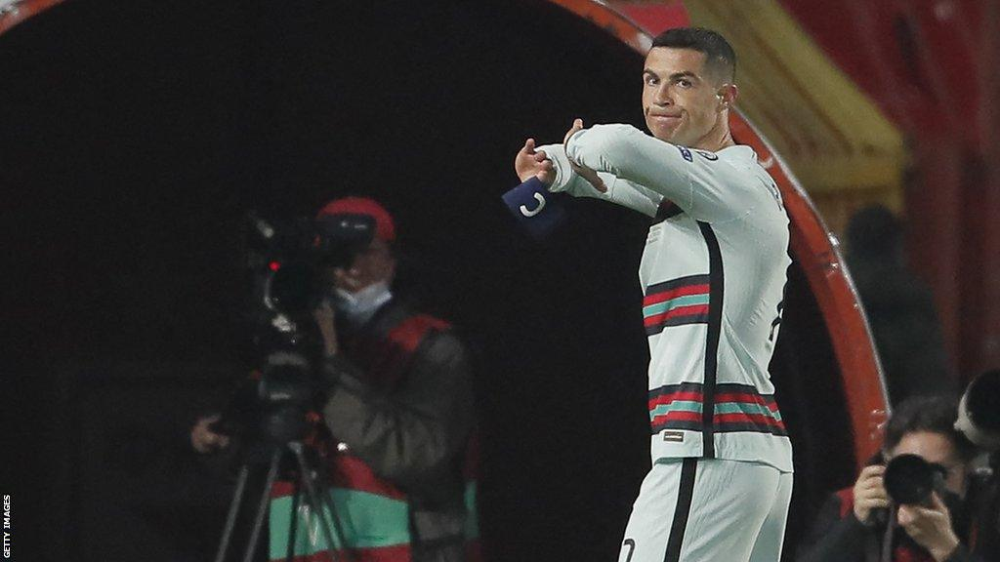

Threw the Armband — Twice
Serbia rage: On 27 March 2021, in a World Cup qualifier, Portugal travelled to Serbia. In the 93rd minute of stoppage time Ronaldo's lob clearly crossed the line before defender Stefan Mitrović hooked it out, but referee Danny Makkelie did not award the goal. Furious, Ronaldo tore off his captain's armband, hurled it to the turf and stormed off to the dressing room, leaving his teammates to finish the match without him.
Disputed call: With no goal-line technology in use, the stoppage-time winner was wrongly chalked off and the match ended 2-2. Slow-motion replays confirmed the ball had clearly crossed the line; Portuguese media dubbed it the 'injustice of the century'. Makkelie later apologised publicly to Portuguese paper A Bola, but the score could not be changed — Ronaldo's fury was not without cause.
What happened to the armband: The discarded blue armband was picked up by an on-duty firefighter, Djordje Vukicevic, and handed to a local charity. But Ronaldo's walking off and throwing the armband caused huge controversy in Portugal — critics argued that no matter how absurd the call, abandoning the team as captain was a dereliction of duty, and the armband is the symbol of the country and should not have been trampled.
The armband auction: Dramatically, the 'angry armband' was put up for online auction by the Serbian charity for three days. It eventually sold for €64,000 (about £54,000), with all proceeds going to fund treatment for a six-month-old Serbian boy, Gavrilo Djurdjevic, suffering from spinal muscular atrophy (SMA). A storm ended up doing accidental good.
Auction twists: The auction was not without incident — during the bidding a malicious sky-high bogus offer caused public outrage, and the authorities promised to track down the troll. The final price far exceeded expectations; the baby's mother, Nevena, wept with joy and called the money 'life-saving'. The press joked that it was Ronaldo's 'most expensive tantrum' — adding a touching tinge to an otherwise negative story.
Euro repeat: On 27 June that year, in the Euro round of 16, Portugal were knocked out 0-1 by Belgium. Ronaldo again lost control, throwing the captain's armband to the ground and kicking it away as he trudged down the tunnel. Two armband tosses in three months drew wave after wave of criticism: the 'sore loser' tag stuck hard, and even Portuguese legends publicly voiced disappointment.
Broad comparison: Compared with Messi's restraint after Argentina defeats, or Modrić's composure after losing a World Cup final, Ronaldo's repeated 'armband-toss' outbursts were widely seen as a shortfall in mental maturity. Supporters plead competitive will; critics argued that a true leader steadies the ship in adversity, not leading the collapse. It is a stain on his character file that won't wash out.